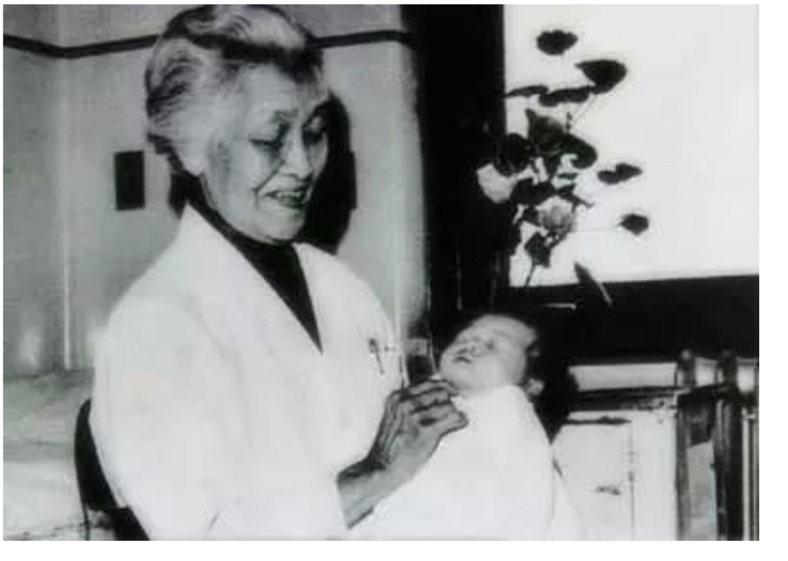
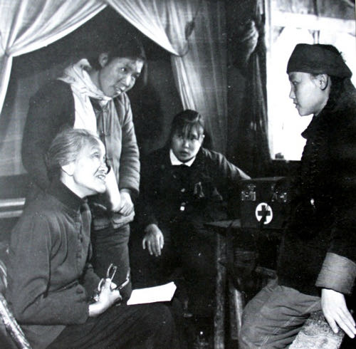
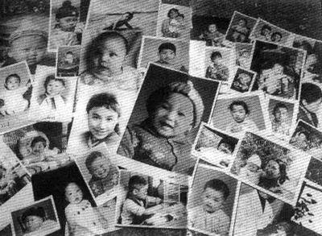

你好，欢迎来到《医学通识50讲》，我是薄世宁。
1962年，北京协和医院妇产科主任林巧稚收到一封来信，信是这样说的：
看到这里，林巧稚医生立刻想到，前面几个孩子夭折的原因一定是严重的新生儿溶血病。这种病主要是母子血型不合引起的。孩子的红细胞破碎、溶血，导致黄疸，严重的病例很快就会死亡。
在当时的中国，这种病只要是重型，还没有一个存活的先例。在全世界也只有少数病例得到治愈。
林巧稚让焦海棠来到北京，她亲自接生。生产过程非常顺利，焦海棠生下了一个5斤8两的男婴。
但是几个小时后，孩子的皮肤迅速变黄，最令人担心的事还是发生了。孩子发生了致命性的新生儿溶血病。
其实在病人来之前，林巧稚医生已经检索了大量文献，研究了世界上对于这个病的治疗进展。她知道这个孩子需要换血。
但是应该怎么换？换多少？什么速度换？换血过程中应该注意什么？这些都没有先例可循。
林巧稚和内科、外科、儿科、病理科的专家一起讨论。最后，她决定为了救命，冒险给孩子换血。
林巧稚守在孩子床边，她小心翼翼地每分钟给孩子抽出15毫升病血，然后再输回去8毫升健康的血，就这么一管一管地换。时间一分一分地过去了，最后，她给孩子换了400毫升血。孩子的皮肤也越来越红润了。
按照这个做法，林巧稚总共给孩子换了三次血。最终，她救活了这个孩子。
孩子的妈妈焦海棠后来回忆：“特别辛苦。整整七天，林巧稚医生不离开孩子，什么都是她管。”
为了感谢协和医院，感谢林巧稚医生，妈妈给孩子取名王协和。
直到今天，换血疗法仍然是对于严重新生儿溶血病的一项关键的救治方法。
林巧稚医生就是这节课要讲的大医生。她是北京协和医院第一任中国籍妇产科主任，她是中国医生的表率，是中国女医生的表率。

中国妇产科的开创者
1901年，林巧稚出生在厦门鼓浪屿。5岁的时候，她目睹了母亲因为妇科癌症离开人世的悲剧，她立志用医学拯救病痛中的人民。
1921年，21岁的林巧稚考取了北京协和医学院。协和医院是当时乃至今天，中国最好的医学院之一。在当时，协和医院采取的是西方医学教育模式，一届只招收25人，能考取的人凤毛麟角。
在这些出类拔萃的医学生中，林巧稚的成绩遥遥领先，而且拿到了最高奖学金“文海奖”。
1929年，林巧稚获得医学博士学位，留在协和妇产科工作。
当时的住院医师培训相当严格和辛苦，林巧稚吃住在医院。半年后，她被破格提升为协和医院住院总医师。按照常规，一般的医生要工作五年才可能得到这个提升。
后来，林巧稚先后到欧洲、美国学习。
在协和医院建院之初，医院的专家大多数都是外国人。但是在30年代以后，中国医生逐步成长起来，包括曾宪九、吴英恺、诸福棠、林巧稚等等，他们每一个人后来都成为泰斗级的医学大家。
1940年，39岁的林巧稚担任协和医院妇产科主任。这是协和建院以来，第一位中国医生担任妇产科主任。
新中国成立后，林巧稚的事业达到巅峰。1955年，她成为新中国第一位女学部委员，也就是女院士。
林巧稚具备大医生的全部特质。
首先，学术贡献。
林巧稚是中国妇产科的主要开创者和奠基人之一，在她主持和倡导下，中国开展了第一次大规模的宫颈癌筛查。这项举措让宫颈癌早期发现率提升了大约8倍。

林巧稚对常见的妇科肿瘤进行探索研究，让这些病的病死率得到降低。
为了得到中国妇女骨盆尺寸的正确数值，她检索和查阅了上万份病例，让女人生孩子更安全。即便是在她将近80岁的时候，仍然在病床上完成了50万字的著作《妇科肿瘤学》。
其次，职业精神。
林巧稚追求科学，率先对妇产科学许多方面进行了研究。同时，还手把手地教育年轻医生。她教学严谨，培养出了很多医学专家。
最后，看病不看人。
意思是不论病人身份高低，林巧稚都用医生的严谨和关爱治疗病人。
虽然她自己没有孩子，但是她亲自接生了5万多名婴儿，包括水稻之父袁隆平，冰心的孩子和林徽因的孩子。但是，林巧稚接生的最多的是普通百姓的孩子。她被称为“万婴之母”。
无论时光如何变迁，在中国的医学界，林巧稚医生永远是医生学习的榜样，是大家敬爱的老师。

一生未婚的职业承诺
很多人感慨于林巧稚医生聪慧、刻苦、敬业、爱国、仁爱。但是很少有人知道，在曾经以男医生为绝对主力的医学领域，女性从医所付出的代价和艰辛。
这些艰辛有些来自社会偏见，有些来自家庭的压力，有些则源于观念的束缚。
当时的观点是，学医是件艰苦的事，培养医生的过程需要大量的资源和个人的努力，结婚生子就可能让人分心。女性不可能同时扮演贤妻良母和职业女性两种角色，只能选其一。
所以，林巧稚毕业留院的时候，当时医院给她的聘书是这样写的：
今天我们在医院看到很多女医生，太正常不过了。但是你可能不知道，在170年前，现代医学体系下是没有女医生的，在当时很多专业领域对女性存有偏见。
根据资料显示，西方现代医学第一位女医生叫做伊丽莎白·布莱克威尔（1821—1910）。她报考医学院，几乎全部医学院都拒绝她。最后，她不得不上了一个当时不是很有名的学校。
1849年，她获得医学学位，但是找工作，又遇到了困难。拒绝的理由还是几乎都一致：“医生是一门艰难的工作，不适合女性。”
所以，在林巧稚医生那个年代，一位杰出的女性做一名医生的个人代价就是不结婚。这并不完全是自愿的，而是受到了当时观念的影响。
实际上，当时协和毕业的几位女老师都是终身未嫁。虽然，后来这项规定取消了，但是为了事业，很多人还是选择了单身。
在今天，这种偏见已经被打破了。林巧稚医生的事迹告诉我们，女性在医疗岗位上同样可以做出优秀的成绩。
女医生的独特优势
第一，女性从医，支持了患者的选择权。
病人看病会有各种考虑，比如隐私、文化；再比如，有的人认为女医生温和细致，有人认为男医生果断干脆。所以，实际上患者会选择医生的性别。
在今天，女医生多了，也就支持了患者的选择权。
2016年，斯坦福大学的一项研究指出，50.2％的女性倾向于看女妇科医生，41％的女性没有选择倾向，8.3％的女性更希望选择男妇科医生。
这些选择女医生的病人，会认为女医生更能体会自己的痛苦，比如生孩子时候的疼痛，也就容易做到共情，而这些是男医生无法亲身经历的。
选择男医生的病人，则认为男医生体力更好，做手术可能更有优势。
第二，女医生更善于沟通，善于捕捉细节。所以，在医患沟通中时间长，患者就医体验好。
有研究指出，女医生每次的问诊时间会比男医生高出10%左右。
男医生一旦找到关键信息之后，就马上给出诊断治疗。女医生则更愿意从其他方面多聊几句。所以，病人的体验相对更好。
第三，整体而言女性更谨慎，不盲目自信，表现为更遵从临床治疗指南。这个风格，在治疗老年内科疾病方面显示出了优势。
哈佛大学公共卫生学院做了这样一项研究。研究对象是在2011年1月-2014年12月期间，入院的150多万名65岁及以上的内科住院患者。结果发现，女医生治疗的病人入院30天死亡率和再入院率都低于男医生。
女医生在老年内科疾病方面具有优势。但是，男医生的思维相对更活跃，勇于开拓。所以，在一些疑难病和需要冒险精神的疾病面前，具有优势。
在今天，女医生已经不必为了事业牺牲家庭了，越来越多的女性从事医疗，女医生的比例越来越高。
在中国，2014年的数据显示，女医生人数和男医生人数接近。2016年，上海的注册女医师占到了50.16%，超过了男医生。
林巧稚的精神激励着女医生的成长，女医生在中国的医疗行业中起到了突出的地位和作用。
林巧稚为中国的医学事业贡献了终生。
1983 年 4 月 22 日，病重的林巧稚在昏睡中发出急促的喊声：“产钳，产钳，快拿产钳来！” 过了一会儿，她脸上露出一丝微笑：“又是一个胖娃娃，一晚上接生了 3 个，真好！”
这是她留给这个世界最后的话。
在林巧稚的追悼会上，她遗像两旁悬挂着两幅4.5米高的挽联。
上联曰：创妇产事业，拓道、奠基、宏图、奋斗，奉献九窍丹心，春蚕丝吐尽，静悄悄长眠去；
下联曰：谋母儿健康，救死、扶伤、党业、民生，笑染千万白发，蜡炬泪成灰，光熠熠照人间。
下节预告
下节课，我们将进入新的一章，讲讲医生精进之路。